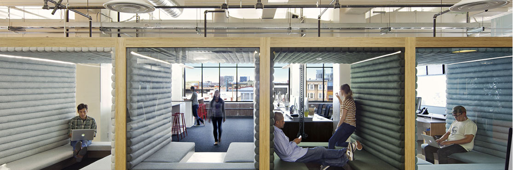

“
SlideRule is a wonderful stepping stone to get to your goals in Data Science. They show you that there are people doing amazing things all over the place, and that you can be one of them too.
”
Sara Weinstein's graduate education gave her subject knowledge, discipline, and a love of learning. But when switching careers from neuroscience to data science, she found she lacked some other key resources: guidance, accountability, and time. With SlideRule's curated online curriculum and personal attention from her SlideRule mentor, she gained the skills and confidence she needed to land her dream job as a data scientist.
I spent over a year trying to learn them on my own. My strategy was to study statistics and machine learning through online courses. But with all the options out there, it seemed overwhelming. There was no way I could complete 8 online courses just to get my foot in the door - I had a full-time job as a research officer for the government, plus two kids to manage too.
I kept stalling, until I found SlideRule. I loved that they had curated the best content for me, so I didn't have to wade through everything myself. I'm also someone who does better with a bit of external pressure, and I knew that having a mentor would help me move a lot faster than I'd been able to alone.
I tried learning on my own, and it was overwhelming.
When I started considering Data Science as the next step in my career, I knew there was a lot I needed to learn. I have a PhD in Neuroscience, but as I looked at the descriptions for the jobs I wanted, I realized pretty quickly that I don't have all the technical skills I needed.
I spent over a year trying to learn them on my own. My strategy was to study statistics and machine learning through online courses. But with all the options out there, it seemed overwhelming. There was no way I could complete 8 online courses just to get my foot in the door - I had a full-time job as a research officer for the government, plus two kids to manage too.
I kept stalling, until I found SlideRule. I loved that they had curated the best content for me, so I didn't have to wade through everything myself. I'm also someone who does better with a bit of external pressure, and I knew that having a mentor would help me move a lot faster than I'd been able to alone.

From our very first meeting, I knew my mentor was special.
My first meeting with my mentor, Ike, set the tone for a very productive relationship. We spent a lot of time talking about what I was interested in and what I wanted to get out of SlideRule. He kept asking me questions about particular parts of Data Science that I wanted to learn more about. I thought it was nice of him to be so interested, but I thought he was just being polite.
Several hours later, I got an email from him with a long list of resources tailored specifically to what I'd told him I wanted to learn. I was absolutely flabbergasted - it must have taken him at least an hour. Here was this total stranger who had taken the time to identify a whole bunch of books, PDFs and papers just for me, that I would not have found on my own. It was just amazing!
Hearing real Data Scientists talk was invaluable.
Data Science is a pretty broad field, with lots of names and terms to learn. When I started, I felt like I knew what my strengths were and my skill set, but I didn't know the right words to use. I constantly worried about betraying the fact that I was an outsider by saying the wrong thing.
In SlideRule's mentor calls and office hours, I got to hear how actual Data Scientists talk and the kind of vocabulary they used. I learned what they meant when they talked about things like "data pipelines" and "data warehousing." So when I got stuck, I had a much better idea of what to search for on Google or how to frame questions in the right way. Most importantly, I felt a lot less insecure when I started looking for jobs, since I had a stronger grasp over what I was talking about.
I'm so happy to go to work every day!
For weeks, I'd seen a posting for a job with Boeing that I knew I wanted, but I wasn't sure I was ready. My mentor encouraged me to go after it. We did mock interviews, and he sent me lists of the things I needed to prepare for technical interviews. He held my hand the whole way through the process-which is a big reason I got the job!
At work, I build models to help airplane crews and analysts pull out information from maintenance logs and schedules. I use supervised and unsupervised learning methods to do things like anomaly detection, so we make sure we see important issues that come up. In other projects, I've worked with time series data and implemented over 15 different types of algorithms, like mean shift detection, to identify outliers.
I'm so happy to go to work every day. It's so much fun, and it's exactly what I imagined my dream job. My experience shows that it might be tough to get there, but with the right help, you definitely can!
View all stories
“
Can’t say enough about the importance of having a mentor to help me through the course. Their feedback and recommendations were priceless.
”